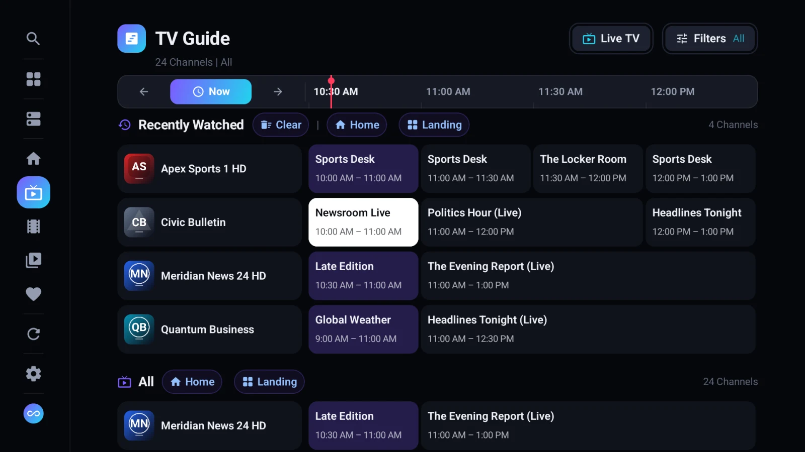

Using the TV Guide: Filters, Programme Details and Catch-Up
Find your way around Tachyon's TV Guide — the timeline, filters for movies, sports, kids and news, programme details, Start Over, and fixing guide times.

Tachyon's TV Guide shows every channel on a timeline, like a TV's own programme guide. It comes from your service: the panel's guide on Xtream Codes, the guide named in an M3U playlist (or one you add), or the Emby server's guide.
Opening the Guide
- TV TV Guide at the top of Live TV, or TV Guide in the player's bottom bar — that one opens the guide on the channel you're watching.
- Phone Guide at the top of Live TV, or a channel's menu (long press) → TV Guide.
- Desktop From Live TV, or E in the player on a live channel.
Reading the Grid
- Each row is a channel, each block a programme. The programmes on now are highlighted.
- The time bar on top moves it: Now jumps back to the present; Earlier and Later go back and forward.
- Select a programme to see its details: the title, time, description and, where the guide has one, a picture.
From the details:
- Watch (on a computer: Watch Live) — a programme on now plays its channel.
- Start Over — a programme on now, on a channel with catch-up, plays from its beginning.
- Watch Catch-Up (on a computer: Catch-Up) — a programme that already aired, where the provider keeps an archive.
- Desktop Remind Me — a programme coming up; about a minute before it starts, a notice offers Watch Now. Tachyon never switches channels by itself.
Guide Filters
Filters opens the Guide Filters:
- Show picks a kind of programme: All Programmes, Movies, Sports, Kids, News or Series — only the kinds your guide really has. Programmes that don't match are dimmed (Desktop and channels with nothing matching are hidden). Your choice is remembered.
- Below it, the channel categories, as on Live TV — so you can look at just Sports, or just your Favorites.
How Fresh Is the Guide?
The guide updates by itself in the background — every 8 hours by default.
- Android Settings → Data → Refreshing → TV Guide: every 4, 8, 12 or 24 hours. Refresh TV Guide there fetches it now.
- Desktop Settings → Data & Storage → Refresh TV Guide Every: 1 to 48 hours. Reload Guide in the Guide Filters fetches it now.
When the Guide Looks Wrong
| What You See | What to Do |
|---|---|
| Every programme is an hour (or more) early or late | Set Guide Time Offset in the service's TV Guide options, from −12 h to +12 h. |
| Some channels have no programmes | Their names or ids don't match the guide. Add a guide that lists them in the service's TV Guide options, or ask your provider. |
| The whole guide is empty | Check the service's guide link, then fetch the guide again (see above). |
Where Guide Data Comes From
| Service | Guide |
|---|---|
| Xtream Codes | The panel's own guide, plus a short guide per channel when you open it. |
| M3U Playlist | The guides named in the playlist, and any you add yourself (plain, .gz or .xz). |
| Emby Server | The server's own guide. |
You add your own guide in the service's form: Android one Guide Link (XMLTV) in its TV Guide section; Desktop several under TV Guides, merged by channel (the first guide that lists a channel wins). Use the Provider Guide (Xtream) or Use the Playlist's Guides (M3U) adds the service's own guide after yours.
Questions and Answers
Why can't I play an old programme?
Only channels whose provider keeps an archive (catch-up) can play programmes that already aired, and only within that archive's window — often a few days. See Catch-Up and Start Over.
Does the guide use my stream connection?
No. The guide is downloaded as data, not as a stream, so it never takes a connection from your plan.